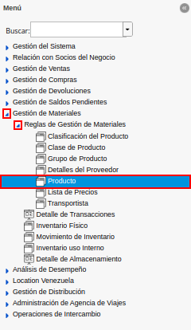
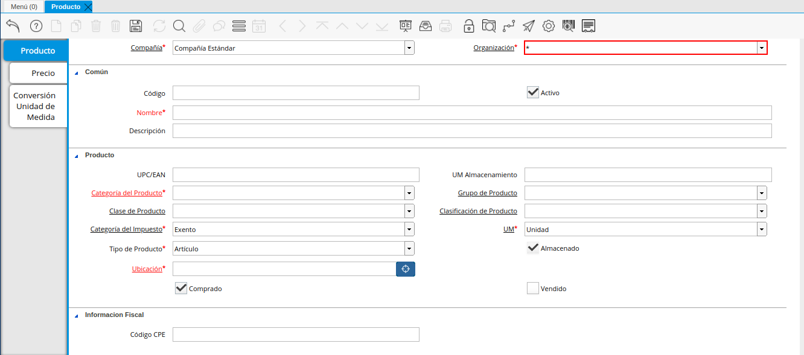
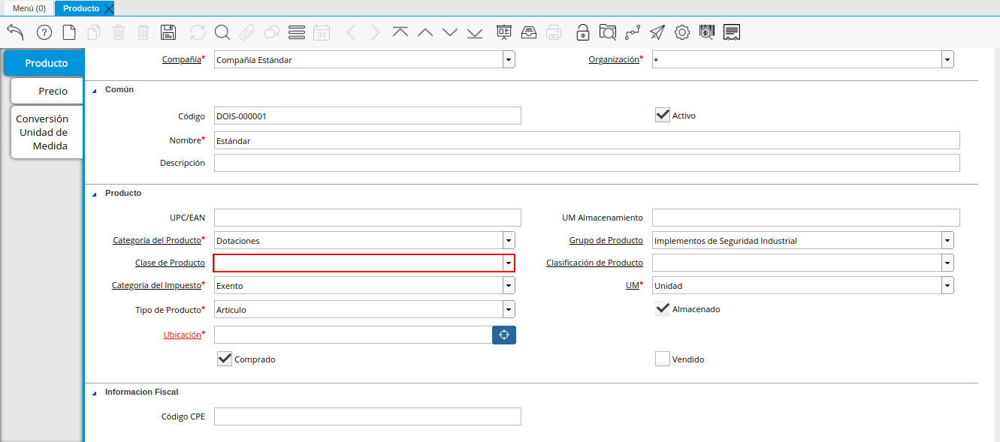
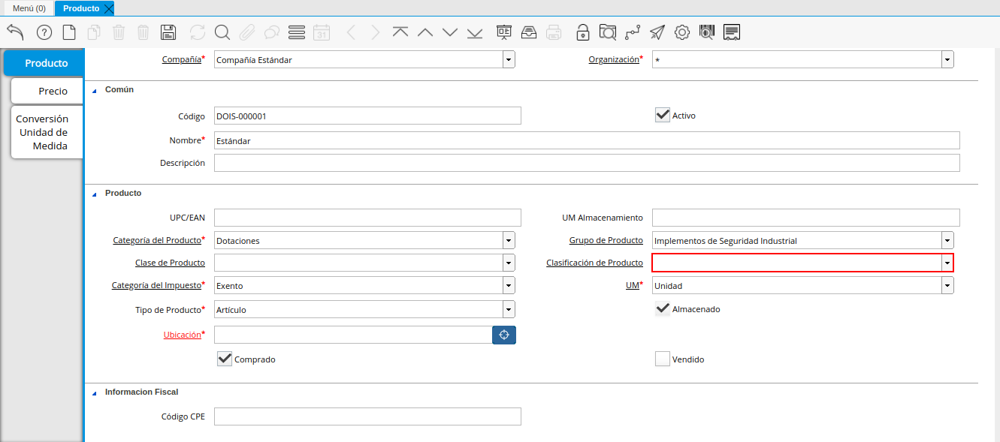
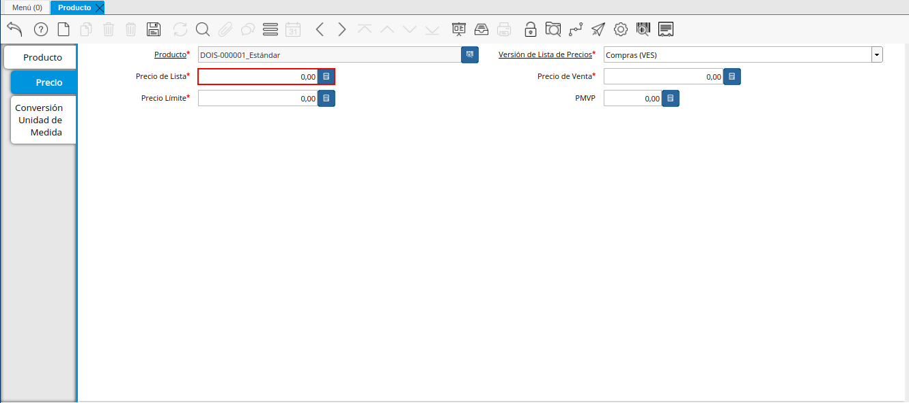
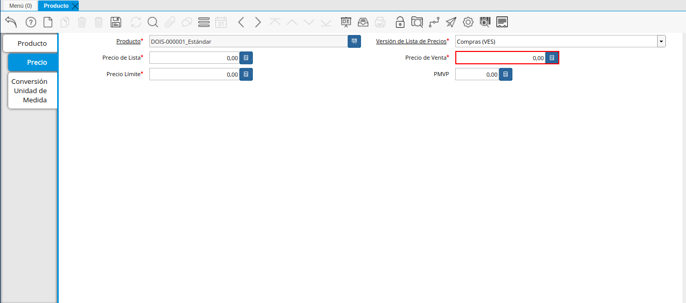
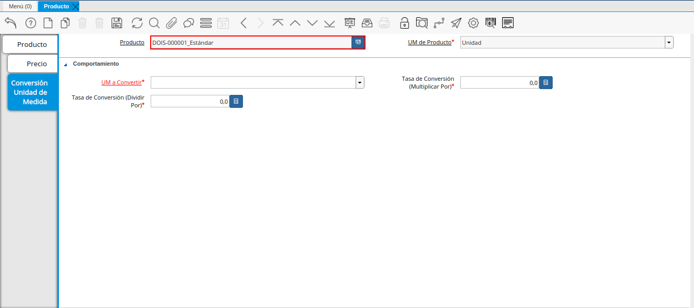

2.2.1. Registro de Producto¶
En el menú de ADempiere, ubique y seleccione la carpeta “Gestión de Materiales”, luego seleccione la carpeta “Reglas de Gestión de Materiales” y finalmente seleccione la ventana “Producto”, adjunto imagen para referencia.

Imagen 1. Menú de ADempiere
En esta ventana se registran los datos principales que la empresa requiere conocer de los productos, con la finalidad de ser utilizada al momento de realizar alguna compra / venta con dicho producto. Cada uno de los campos con el símbolo (*) son obligatorios para el registro.
Podrá visualizar la ventana “Producto”, dónde debe seleccionar el icono “Registro Nuevo”, que se encuentra ubicado en la barra de herramientas de ADempiere, para registrar un nuevo producto.

Imagen 2. Icono Registro Nuevo de la Ventana Producto
Seleccione en el campo “Organización”, la organización para la cual esta registrando el producto.

Imagen 3. Campo Organización de la Ventana Producto
Warning
Para que el producto este disponible para todas las organizaciones, el mismo deberá estar registrado con la organización en (*) de lo contrario el producto solo estará disponible para una sola organización.
Introduzca en el campo “Código”, el código para el producto que esta registrando, este código es definido por un estándar de códificación establecido en ERPyA para Codificar los Productos.

Imagen 4. Campo Código de la Ventana Producto
Introduzca en el campo “Nombre”, el nombre del producto que esta registrando.

Imagen 5. Campo Nombre de la Ventana Producto
Introduzca en el campo “Descripción”, una breve descripción correspondiente al producto que esta registrando.

Imagen 6. Campo Descripción de la Ventana Producto
Introduzca en el campo “UPC/EAN”, el código de barras correspondiente al producto que esta registrando.

Imagen 7. Campo UPC/EAN de la Ventana Producto
Introduzca en el campo “UM Almacenamiento”, la unidad de medida de almacenamiento del producto.

Imagen 8. Campo UM Almacenamiento de la Ventana Producto
Seleccione en el campo “Categoría del Producto”, la categoría a la cual pertenece el producto que esta registrando, la selección de este define el comportamiento del producto que se esta registrando, dicho comportamiento se encuentra explicado en el documento Categorías de Productos elaborado por ERPyA.

Imagen 9. Campo Categoría del Producto de la Ventana Producto
Seleccione en el campo “Grupo de Producto”, el grupo al cual pertenece el producto que esta registrando, la selección de este define el comportamiento del producto que se esta registrando, dicho comportamiento se encuentra explicado en el documento Grupo de Productos elaborado por ERPyA.

Imagen 10. Campo Grupo de Producto de la Ventana Producto
Seleccione en el campo “Clase de Producto”, la clase a la cual pertenece el producto que esta registrando.

Imagen 11. Campo Clase de Producto de la Ventana Producto
Seleccione en el campo “Clasificación de Producto”, la clasificación a la cual pertenece el producto que esta registrando.

Imagen 12. Campo Clasificación de Producto de la Ventana Producto
Seleccione en el campo “Categoría del Impuesto”, la agrupación de impuestos aplicale al producto que esta registrando.

Imagen 13. Campo Categoría del Impuesto de la Ventana Producto
Seleccione en el campo “UM”, la unidad de medida del producto.

Imagen 14. Campo UM de la Ventana Producto
Seleccione en el campo “Tipo de Producto”, el tipo de producto que esta registrando.

Imagen 15. Campo Tipo de Producto de la Ventana Producto
Podrá apreciar el checklist “Almacenado”, indicando que la empresa almacena el producto que esta registrando.

Imagen 16. Checklist Almacenado de la Ventana Producto
Seleccione en el campo “Ubicación”, la ubicación de almacenamiento dentro de la empresa del producto que esta registrando.

Imagen 17. Campo Ubicación de la Ventana Producto
Podrá apreciar el checklist “Comprado”, indicando que la empresa compra el producto que esta registrando.

Imagen 18. Checklist Comprado de la Ventana Producto
Podrá apreciar el checklist “Vendido”, indicando que la empresa vende el producto que esta registrando.

Imagen 19. Checklist Vendido de la Ventana Producto
Introduzca en el campo “Código CPE”, el código del producto envasados que esta registrando.

Imagen 20. Campo Código CPE de la Ventana Producto
Seleccione el icono “Guardar Cambios” en la barra de herramientas de ADempiere.

Imagen 21. Icono Guardar Cambios de la Ventana Producto
2.2.1.1. Pestaña Precio¶
En esta ventana se registran las listas de precios utilizadas por la empresa, con sus diferentes precios de lista, límite y estándar que poseen los productos, con la finalidad de ser utilizada al momento de realizar alguna compra / venta con los mismos. Cada uno de los campos con el símbolo (*) son obligatorios para el registro.
Seleccione la pestaña “Precio”, ubicada del lado izquierdo de la ventana “Producto” y proceda al llenado de los campos correspondientes.

Imagen 22. Pestaña Precio de la Ventana Producto
Podrá visualizar en el campo “Producto”, el nombre del producto que se encuentra registrando.

Imagen 23. Campo Producto de la Pestaña Precio de la Ventana Producto
Seleccione en el campo “Versión de Lista de Precios”, la lista de precios que será utilizada para el producto que esta registrando.

Imagen 24. Campo Versión de Lista de Precios de la Pestaña Precio de la Ventana Producto
Introduzca en el campo “Precio de Lista”, el precio lista oficial en la moneda del documento.

Imagen 25. Campo Precio de Lista de la Pestaña Precio de la Ventana Producto
Introduzca en el campo “Precio de Venta”, el precio usado para ventas o compras según sea el caso, este precio es el usado por defecto al momento de cargar una “Orden de Venta” o “Factura”.

Imagen 26. Campo Precio de Venta de la Pestaña Precio de la Ventana Producto
Introduzca en el campo “Precio de Límite”, el precio más bajo para el producto establecido en la moneda de la lista de precio.

Imagen 27. Campo Precio de Límite de la Pestaña Precio de la Ventana Producto
Introduzca en el campo “PMVP”, el precio marcado de venta al público.

Imagen 28. Campo PMVP de la Pestaña Precio de la Ventana Producto
Seleccione el icono “Guardar Cambios” en la barra de herramientas de ADempiere.

Imagen 29. Icono Guardar Cambios de la Pestaña Precio de la Ventana Producto
2.2.1.2. Pestaña Conversión Unidad de Medida¶
En esta ventana se registran las conversiones de las diferentes unidades de medida utilizadas por la empresa, con la finalidad de aplicar dichas conversiones al momento de realizar alguna compra / venta de un producto. Cada uno de los campos con el símbolo (*) son obligatorios para el registro.
Seleccione la pestaña “Conversión Unidad de Medida”, ubicada del lado izquierdo de la ventana “Producto” y proceda al llenado de los campos correspondientes.

Imagen 30. Pestaña Conversión Unidad de Medida de la Ventana Producto
Podrá visualizar en el campo “Producto”, el nombre del producto que se encuentra registrando.

Imagen 31. Campo Producto de la Pestaña Conversión Unidad de Medida de la Ventana Producto
Seleccione en el campo “UM de Producto”, la unidad de medida del producto que se encuentra registrando.

Imagen 32. Campo UM de Producto de la Pestaña Conversión Unidad de Medida de la Ventana Producto
Seleccione en el campo “UM a Convertir”, la unidad de medida a la cual será realizada la conversión.

Imagen 33. Campo UM a Convertir de la Pestaña Conversión Unidad de Medida de la Ventana Producto
Introduzca en el campo “Tasa de Conversión (Multiplicar Por)”, la tasa por la cual se multiplicará la unidad de medida hasta llegar a “UM a Convertir”.

Imagen 34. Campo Tasa de Conversión Multiplicar Por de la Pestaña Conversión Unidad de Medida de la Ventana Producto
Introduzca en el campo “Tasa de Conversión (Dividir Por)”, la tasa por la cual se dividirá la unidad de medida hasta llegar a “UM a Convertir”.

Imagen 35. Campo Tasa de Conversión Dividir Por de la Pestaña Conversión Unidad de Medida de la Ventana Producto
Seleccione el icono “Guardar Cambios” en la barra de herramientas de ADempiere.

Imagen 36. Icono Guardar Cambios de la Pestaña Conversión Unidad de Medida de la Ventana Producto